Интересные факты
- озёра были обнаружены на Титане, спутнике Сатурна, правда, состоят они отнюдь не из воды;
- самое крупное озеро на Земле — Каспийское море, которое с точки зрения науки представляет собой именно озеро, а не море;
- на острове Кунашир есть озеро Кипящее, температура воды в котором достигает 80 градусов;
- причина розового цвета воды австралийского озера Хиллер до сих пор не установлена, ещё одна загадка природы;
- расположенное в Австралии озеро Эйр иногда полностью высыхает, но после сильных дождей оно наполняется водой и занимает до 15 тысяч квадратных километров площади.
Озёра
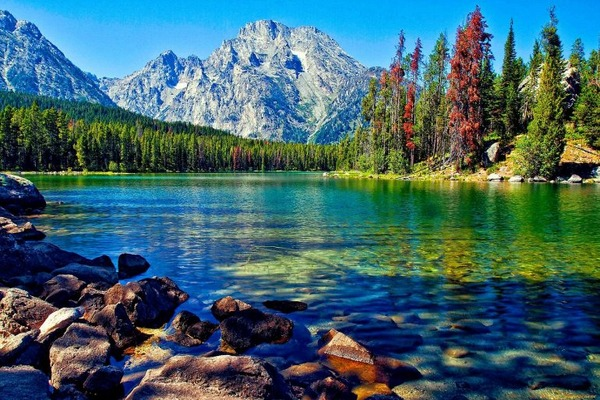
Озёра — компоненты гидросферы, представляющин собой естественно возникшие водоёмы, заполненные в пределах озёрной чаши водой и не имеющин непосредственного соединения с морем или океаном. Всего в мире насчитывается около 5 млн озёр.
Озёра на карте
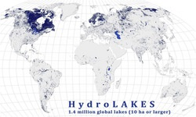
Общая площадь озёр земного шара составляет около 1,8 % суши (примерно 2,7 млн км²). Наиболее часто озера встречаются к северу от 40°Cеверной широты и к югу от 40° южной широты. По происхождению делятся на: тектонические; ледниковые; моренные озёра; речные; приморские; провальные (карстовые, термокарстовые); пойменные; завально-запрудные; горные; кратерные.
Интересные факты
- самая длинная и полноводная в мире река — Амазонка;
- река Урал примечательна тем, что один её берег находится в Азии, а другой — в Европе;
- самая древняя в мире река — Нил, протекающий в основном по территории Египта;
- каждый год реки уносят в моря и океаны около шестнадцати миллиардов тонн земли и камней;
- на свете есть семнадцать стран, в которых нет ни одной постоянной реки, самая крупная из них — Саудовская Аравия.
- Финляндия считается самой водной страной, на её территории протекает около 650 рек.
Реки
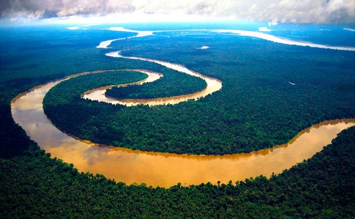
Реки — природные водные потоки значительных размеров с естественным течением по руслу (выработанному им естественному углублению) от истока вниз до устья и питающиеся за счёт поверхностного и подземного стока с их бассейна.
Реки на карте
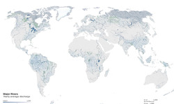
Длинна Амазонки составляет 7100 км, с водосборным бассейном 6915000 км2. Далее идет Нил, длинною 6670 км и водосборным бассейном 3349000 км2. Принята классификация рек по величине: большие реки, средние реки и малые реки. В зависимости от рельефа местности, в пределах которой текут реки, они разделяются на горные и равнинные.
Интересные факты
- в мире насчитывается 63 моря и 5 океанов;
- самое глубокое море — Филиппинское, его максимальная глубина составляет 10265 метров;
- самое тёплое море — Красное, оно же самое грязное;
- самое мелкое море — Азовское, его глубина нигде не превышает тринадцати с половиной метров;
- под Азией существует огромный подземный океан;
- в морской воде содержится такое количество соли, что если её извлечь, можно было бы покрыть её всю сушу, причём многометровым в толщину слоем;
- в морской воде содержится около 20 миллионов тонн растворённого в ней золота.
Моря
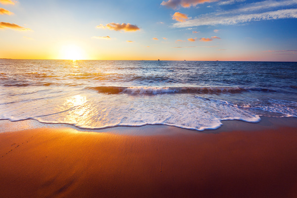
Моря — часть Мирового океана, обособленная сушей или возвышениями подводного рельефа. Отличается от Мирового океана также гидрологическим, метеорологическим и климатическим режимами, что связано с их окраинным положением относительно океанов и замедлением водообмена из-за ограниченности связи с открытой частью.
Моря на карте
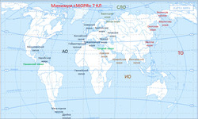
По степени обособленности и особенностям гидрологического режима моря подразделяются на 3 группы: внутренние моря, окраинные моря и межостровные моря. Всего в мире насчитывают 73 моря (не считая Каспийское, Аральское, Мёртвое и Галилейское моря, а также моря, являющиеся частью других морей) — из них 27 в Тихом, 13 в Атлантическом, 6 в Индийском, 14 в Северном Ледовитом и 13 в Южном океане.
Интересные факты
- в Мексиканском заливе развита добыча нефти;
- Мексиканский залив является очень теплым водоемом, поэтому из-за большой тепловой энергии над ним часто образовываются мощные штормы и ураганы, которые обрушиваются на города;
- в Гвинейском заливе экватор пересекается Гринвичским мередианом, соответствующая точка имеет нулевые координаты;
- максимальная глубина Финского залива 121 м. Его средняя глубина около 40 метров, в Невской губе – 6 метров, а в прибрежной полосе и вовсе 1 метр;
- из-за большого числа впадающих в него рек Финский залив почти пресноводен.
Заливы
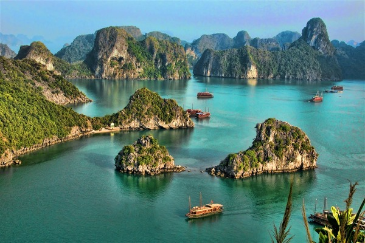
Заливы — часть океана, моря, озера или другого водоёма, глубоко вдающаяся в сушу, но имеющая свободный водообмен с основной частью водоёма. Среди заливов различаются: бухта (моря и озёра), губа (часто речные устья), эстуарий, фьорд, лиман, лагуна (в основном вдоль песчаных берегов), гавань и др.
Заливы на карте
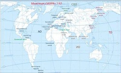
Гидрологические и гидрохимические условия залива тождественны с условиями водоёма, частью которого он является. Площадь акватории Мексиканского залива оценивается в 1,543 км2. Площадь Гвинейского залива превышает 1,53 млн км2. На дне расположена Гвинейская котловина, максимальная глубина — 6363 м. Площадь акватория залива Святого Лаврентия — 263 км2, максимальная глубина — 572 м.
Интересные факты
- самый широкий пролив в мире – это пролив Дрейка, самая узкая часть его насчитывает 820 км;
- за всю историю пролив Ла-Манш переплыло меньше человек, чем покорило Эверест: всего около тысячи людей;
- температура воды в Ла-Манше не поднимается выше 18 градусов даже летом;
- зимой Ла-Манш не замерзает – даже у берегов не образуется лед, это объясняется теплым течением Гольфстрим;
- Босфор – второй по загруженности пролив на планете;
- Мессинский пролив известен плотным движением судов: за год около 15 тыс., совершается около 160 тыс. паромных рейсов.
Проливы
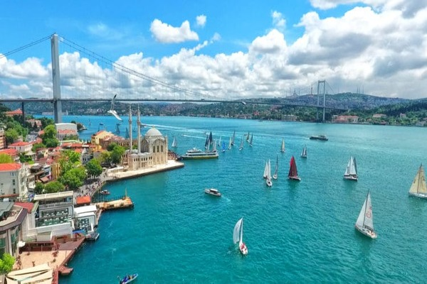
Проливы — водное пространство, расположенное между двумя участками суши и соединяющее смежные водные бассейны или их части. Проливы характеризуются длиной, наименьшей и наибольшей шириной и глубиной. Также указывается направление и скорость течения. Для судоходных проливов составлены лоции.
Проливы на карте
Проливы характеризуются длиной, наименьшей и наибольшей шириной и глубиной. Также указывается направление и скорость течения. Для судоходных проливов составлены лоции (предназначенное для мореплавателей описание морей, океанов и их прибрежной полосы). Самый длинный пролив на Земле — Мозамбикский пролив, длина 1760 км, самый широкий и глубокий — пролив Дрейка, ширина 950 км, глубина 5840 м.
Интересные факты
- океаны и моря содержат 99% всего жизненного пространства Земли;
- сегодня в океанских водах обитают около 70 % всех существующих форм жизни на Земле;
- океаны соленые из-за минералов, вымываемых с поверхности и из недр земли реками, впадающими в океаны;
- за последний век уровень океанской воды поднялся на 25 см;
- скорость звука в воде почти в пять раз превышает таковую в воздухе;
- для около 3,5 млрд человек океан — основной источник их пищи;
- на сегодняшний момент людьми изучено лишь около 10 % территории океанов.
Океан
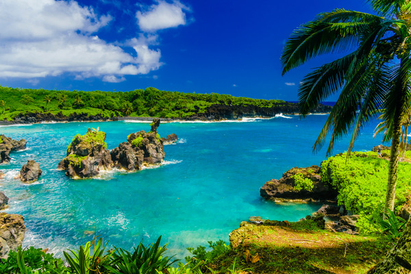
Океан — крупнейший водный объект, составляющий часть Мирового океана, расположенный среди материков, обладающий системой циркуляции вод и другими специфическими особенностями. Океан находится в непрерывном взаимодействии с атмосферой и земной корой.
Океаны на карте
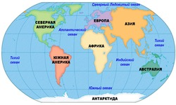
Площадь Мирового океана, в состав которого входят океаны и моря, составляет около 71 % поверхности Земли (порядка 361 млн км²). Самым большим по площади и глубине океаном на Земле является Тихий океан, занимающий 49,5 % поверхности Мирового океана. На сегодняшний день существует версия, что океан появился 3,5 млрд лет назад как следствие дегазации магмы и последующей конденсации паров атмосферы.

{kind=link}
{kind=link}
{kind=link}
{kind=link}
{kind=link}
{kind=link}